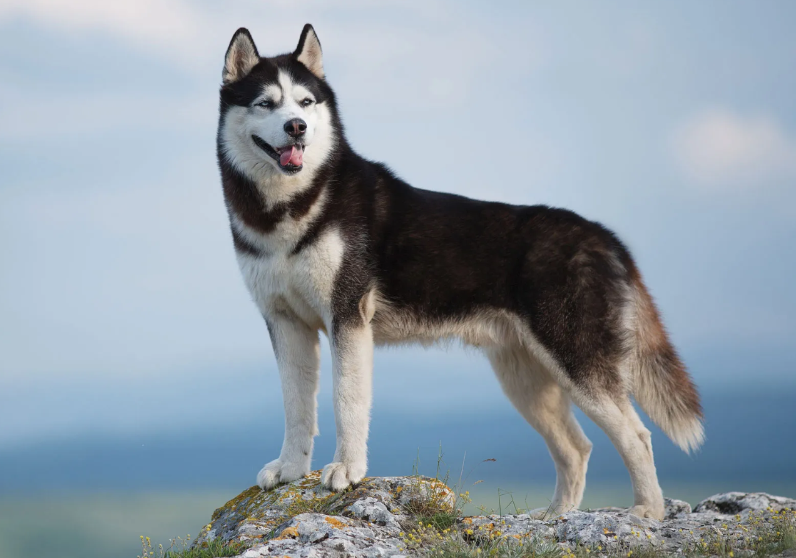

HUSKEY
Weight:
35-50 lbs.
45 lbs.
Height :
21 in.
23 in.
Length:
Medium .
Color:
All colors from black to pure white.
Longevity:
11 – 13 yrs.
Husky personality
Siberian huskies are classic northern dogs. They are intelligent but somewhat independent and stubborn. They thrive on human company, but need firm, gentle training right from puppy hood. These are dogs bred to run, and their love of running may overcome their love for their guardians at times. Siberian huskies tend to be friendly with people, including children.Most Siberian huskies are good with other dogs, especially ones they are raised with. They have a high prey drive and may chase cats and livestock. Siberian huskies can be diggers, particularly in warm weather, because they like to create cool places to lie in. They don’t tend to bark as a rule but they do howl.
What to expect
Siberian huskies were developed under harsh conditions and, not surprisingly, are easy dogs to keep. They can easily become obese if overfed or not exercised. These are dogs bred for running, and they should have a good run at least a couple of times weekly. Siberian huskies tend to be hardy dogs and often live to 14 years of age.Early positive training and socialization are important for the Siberian Husky to focus on people. These dogs enjoy human company and like having a job to do, even if it is just jogging with you. Siberian huskies are not noted for watchdog tendencies but will usually alarm bark. Left alone too much, they can be diggers and chewers or will give the neighbors a lovely howling concert. Siberian huskies do enjoy sledding and ski-joring.Grooming should be done a couple of times a week, with more grooming needed during shedding season. The shorter coat of the Siberian husky is less prone to mattes than the coats of other northern dogs.
History of the Husky
Both Russia and the United States like to lay claim to the Siberian Husky. The breed was developed by the Chukchi tribe of northeast Asia over 3,000 years ago to help them in their nomadic life as sled pullers. Certainly, the breed has spitz ancestors.During the Alaskan gold rush, many sled dog races were set up for amusement as well as for checking out working stock. The dogs from the Chukchis proved to be fast runners of great endurance despite their small size.The fame of the Siberian husky as a racing sled dog was cemented when a team of huskies raced 340 miles through raging blizzards to deliver serum for diphtheria-stricken Nome. The movie Balto and the many stories on the same theme have made this breed recognized by people worldwide.While most of today's Siberian huskies are beloved family pets, many still pull sleds in local races and enjoy ski-joring with their owners.